Places to Visit
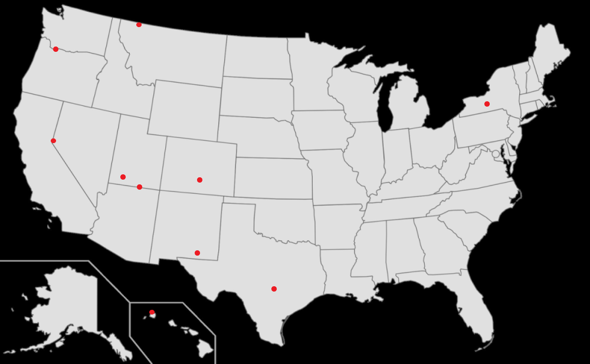I know you love to travel and experience new things, especially nature. I for one really love some of the photos you've taken in scenic places. This section is a list of the top 10 places I would love to visit with you. I chose places that have amazing natural attractions that I think you would love. They're pinpointed on the map and links and descriptions are below. They're in no particular order.
1. Angel's Landing, Utah
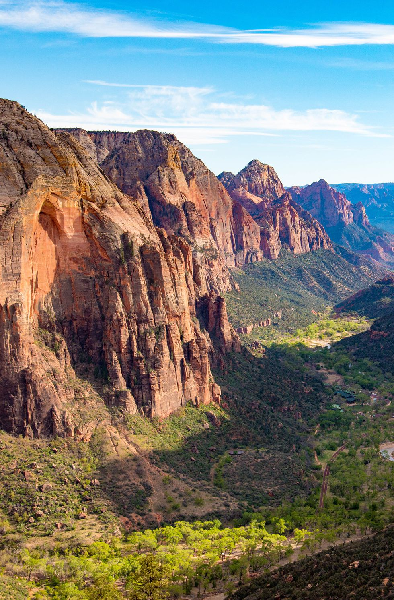This is supposedly one of the best hikes in Utah. It's only 2.4 miles long, but it's crazy steep. The views are apparently AMAZING.
2. Honopu Beach, Hawaii
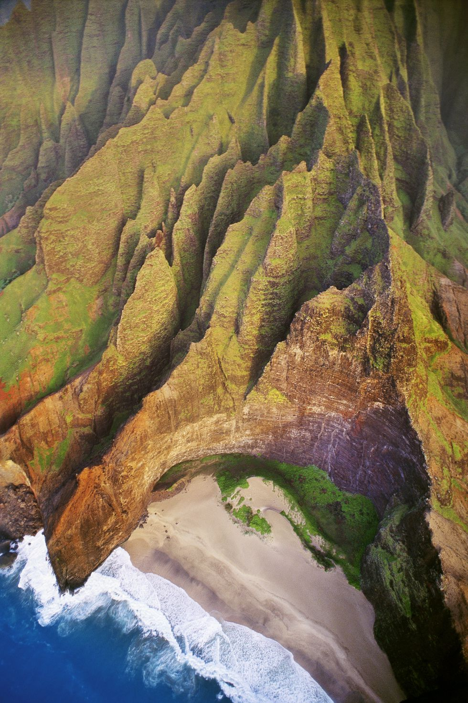This one doesn't need much explanation. It's a remote beach on one of Hawaii's islands. I've heard its amazing, but isn't all of Hawaii?
3. Multnomah Falls, Oregon
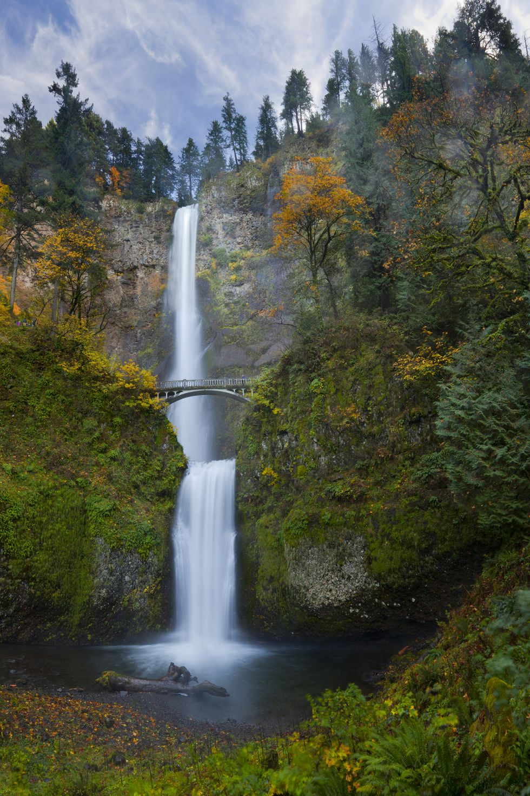This is a two step waterfall near Portland. It's the largest waterfall in Oregon.
4. Great Sand Dunes National Park, Colorado
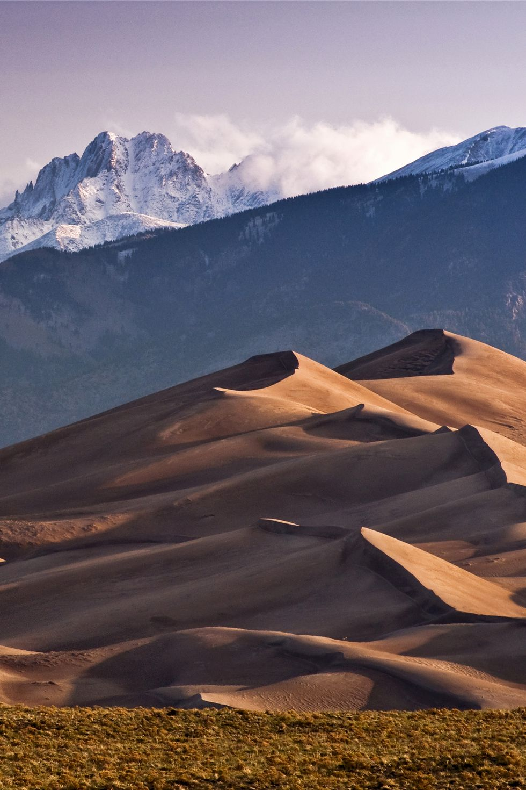Located near some of the tallest mountains in Colorado, these sand dunes are some of the highest sand dunes in North America.
5. Horshoe Bend, Colorado River, Arizona
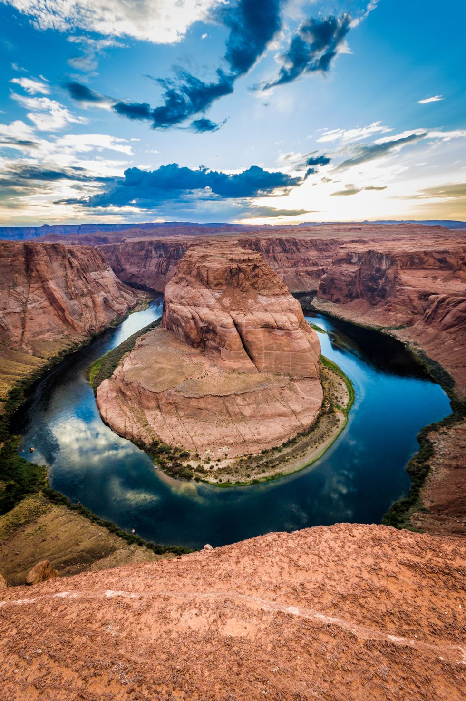The Colorado River is massive, but near the Utah and Arizona border it bends back in a horshoe shape that looks phenominal.
6. Carlsbad Cavern, New Mexico
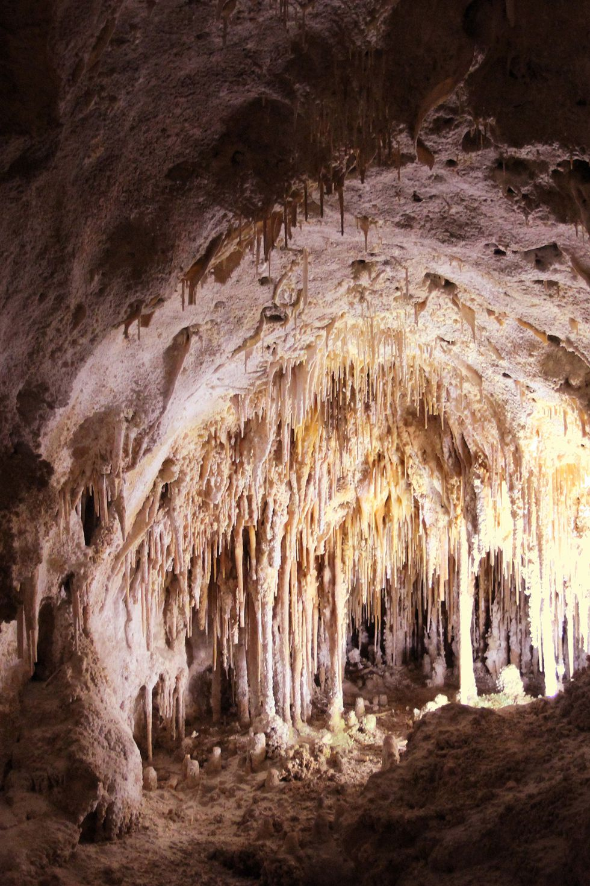These caves are part of a system of over 100 limestone caves buried beneath a desert in New Mexico.
7. Hamilton Pool, Texas
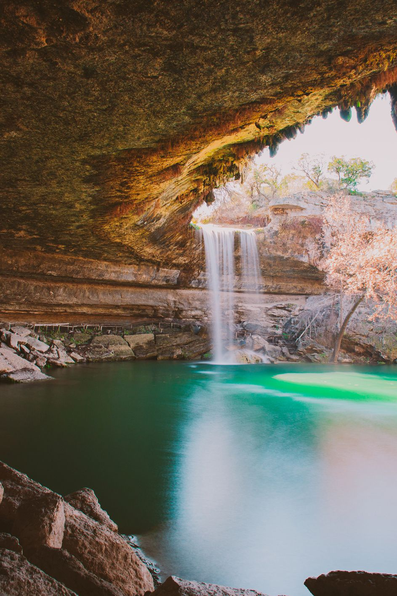This one is close to Austin. These pools are supposedly awesome swimming spots that were created thousands of years ago when the dome of an undergroud river caved in.
8. Watkings Glen, New York
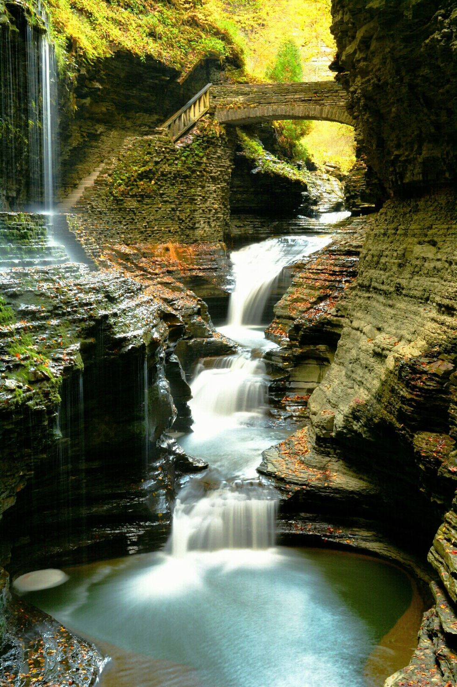This one is kinda close to me. These are a series of 19 waterfalls that all occur within a single gorge within the space of 2 miles.
9. Lake Tahoe, California
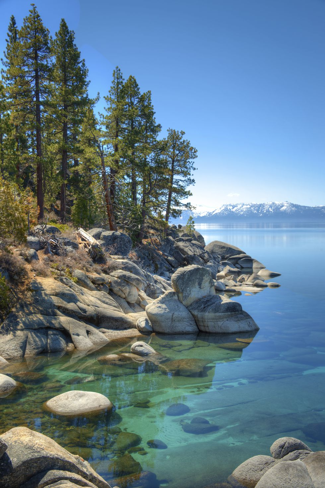Lake Tahoe supposedly has ridiculously clear water. To top it off, the lake is bordered by the Sierra Nevada Mountains. Sounds like an awesome place to be.
10. Glacier
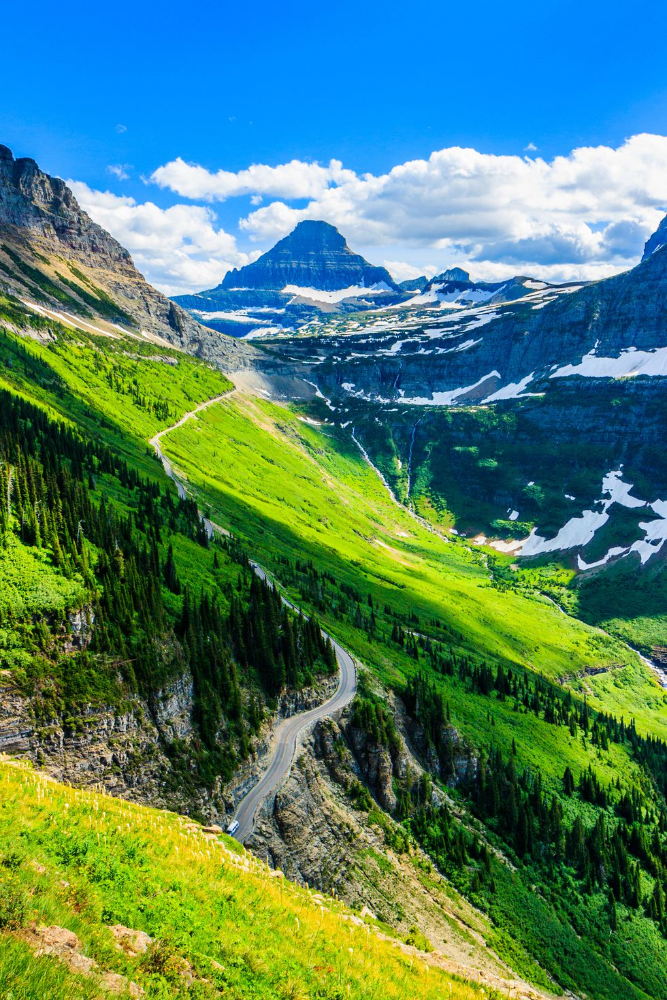Glacier is kinda a freebie. I've yet to go here with you. I would absolutely love to go with you, even if we've both been before.